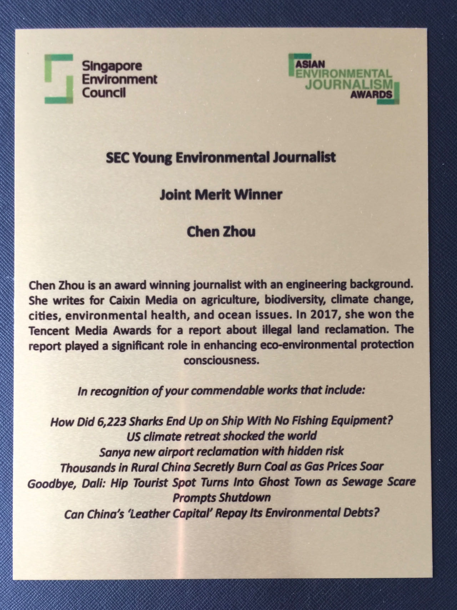

Journalism experiences in China
Summary
I worked as a journalist for 5 years in China. I aim to bring transparency, accountability, and truth to the forefront, playing a pivotal role in shaping an informed public discourse in China.
Portfolio
-
Illegal Land Reclamation

2019-02-25
- Exposed BASF’s plan to build a new factory with illegal land reclamation.
- The article was approved by Premier Li Keqiang.
-
Climate Change

2018-12-24
- Awarded fellowships from Earth Journalism Network and China dialogue to cover the UN Climate Change Conferences COP24, COP23 and COP22 at the scene.
- "Best Climate Reporting of 2018" issued by the China Association for NGO Cooperation.
- Excerpts from the article became reading materials for the final exam of the environmental policy course of Renmin University of China.
-
Holding Authorities Accountable

2018-11-20

2018-11-22
- Broke the silence about police harassment due to the reports of the petrochemical leak in Quanzhou.
- The article prompted an outcry on social media, extensively covered by internationally renowned media and I recieved a rare apology from the police.
- Won Caixin’s “Journalist of the Year Nomination” and “Best All-media Coverage”
-
Environmental Advocacy

2018-07-02
- Continued to report the water and garbage pollution issue in Xiongan New Area. This is a new development zone specially authorized by President Xi Jinping.
- The leaders of the area held a meeting of 1,000 officials to learn from my articles and announced a series of environmental governance actions.
-
Marine Conservation

2017-09-28

2020-07-29
- A Chinese- flagged ship carrying thousands of sharks was caught by Ecuadorean authorities off the Galapagos.I reported the story behind the shark hunt exclusively.
- The Ministry of Agriculture fined the illegal company, and the involved captain was blacklisted.
- My work was recognized as one of the most important reports in the past decade of Caixin.
-
Illegal Land Reclamation
Will New Airport at China’s Popular Hainan Tourist Island Threaten Chinese White Dolphins? (English)

2017-07-20
- Reported exclusively several illegal land reclamation projects by several companies including HNA Group and Evergrande in Hainan Province.
- The State Oceanic Administration subsequently issued a new deal to control state reclamation projects strictly.
- Won “Annual Public Service Report” Award issued by Tencent.
-
Tobacco Control

2015-08-04
- Exclusively wrote a series of reports, and the corporation involved eventually apologized and accepted punishment.
- Won “First prize” of the National China Tobacco Control Communication Award issued by the Ministry of Health.
-
Disaster Coverage

2014-08-06
- To the front lines of the 6.5 magnitude earthquake.
- Won China Media Foundation’s Disaster Coverage Grant.
-
Disaster Coverage

2014-07-21
- Exclusively exposed the disaster relief food in Wenchang, Hainan and other places was moldy bread.
- The article was the first headline after the establishment of the company website.
International Recognition
-
Media Coverage
Environmental reporters face disinformation, threats in China's restrictive political climate
- Interviewed by the International Journalists' Network in November 2022.
-
Visiting Scholar

- Invited by the U.S. Department of State’s International Visitor Leadership Program in January 2020.
-
Award
- Was Merit Winner for excellent performance in the Asian Environmental Journalism Awards “Young Environmental Journalist” of Singapore Environment Council in March 2019.
-
Mentor
- Invited by the world's largest environmental network IUCN as a guest speaker to participate in the South Asia Trans-Border Rivers project conference in Nepal in June 2018.